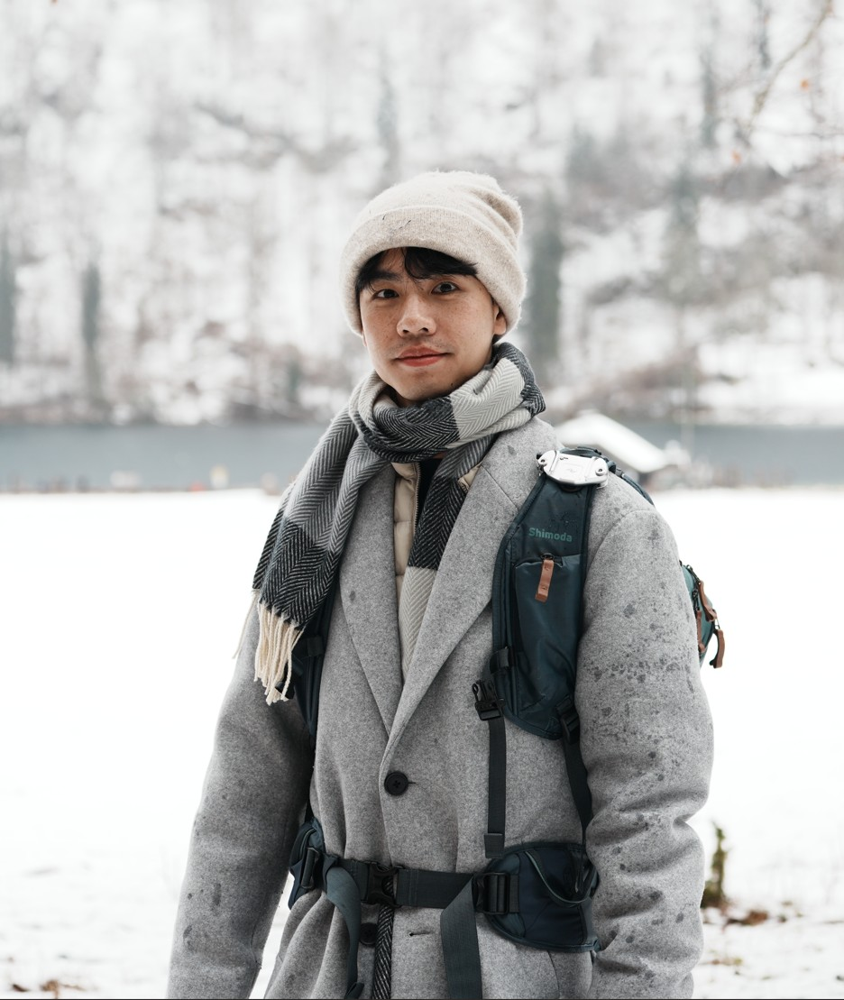

文字簡介
嗨，大家好，我是瑋瑋老師啦。
不知道大家是否喜歡「觀察」這件事？我很喜歡呢，不知不覺中，這也成為我的日常生活最重要的一件事。觀察那片樹皮上的苔癬、觀察泥土洞中的小昆蟲、觀察樹林間的腳步聲...
自 2019 年起，開始從事生態講師的工作，著重於親子團體的戶外活動帶領。帶著孩子們爬爬山、逛公園、下海水，用眼睛、手足，去觀察、體驗身邊那些常被忽略的小事物。至今已逾千場活動，在這過程中，除了教孩子們知識，更致力於同時將生態觀念傳遞給大家；除了對生物感到好奇、喜愛，更重要的是讓大家願意一起保護原生生態系。
我體能不好，所以不會帶大家跑跑跳跳，但我擅長講故事、擅長分享新知識。不分年齡，相信都能享受在這趟慢活的生態旅程之中。
不過我想各位家長，最享受的還是聽我上課講笑話的氣氛（笑）。
學歷
- 國立臺灣大學 海洋研究所 生物組
- 國立中興大學 生命科學系
經歷
- 《瑋瑋老師的撒野記事錄》科普粉專主編
- 《跟小白老師玩著學》團隊講師
- 數感實驗室合作講師
- 多家幼兒園合作室內生態觀察講師
- 企業 CSR、ESG 活動講師 (賽諾菲、華新、國泰...)
- 北市外籍高中生全英文生態活動講師
- 亞洲魚類學會議暨太平洋魚類學會會議生態活動講師（全英）
- 兒童科普書籍審定
服務項目
- 親子生態活動（日間、夜間）
- 成人生態活動（日間、夜間）
- 寒暑假學生營隊
- 各級學校、補習班室內生態講座
- 企業 ESG 活動、SDGs 講座
- 科普書籍審定
- 社群廣告合作
任何合作請聯繫粉絲頁或是 E-mail 聯繫。
活動照片

企業ESG活動 (賽諾菲)

親子生態活動

夜間生態觀察